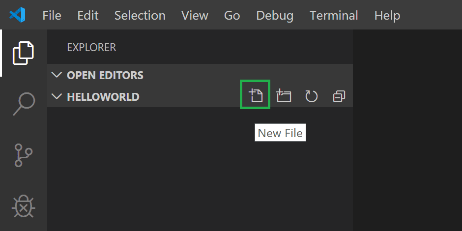
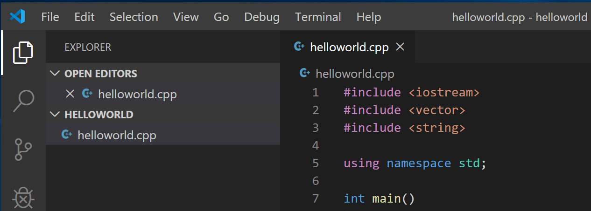
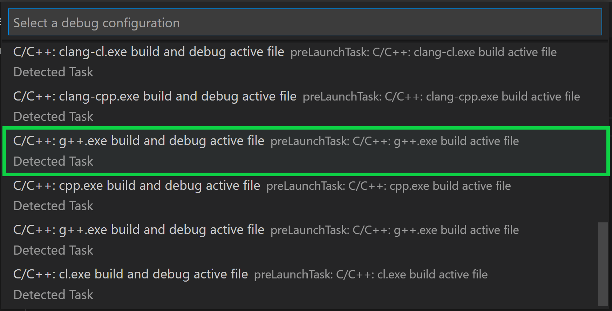
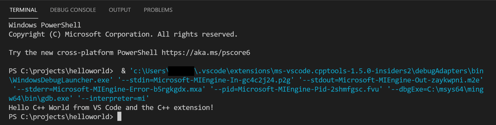
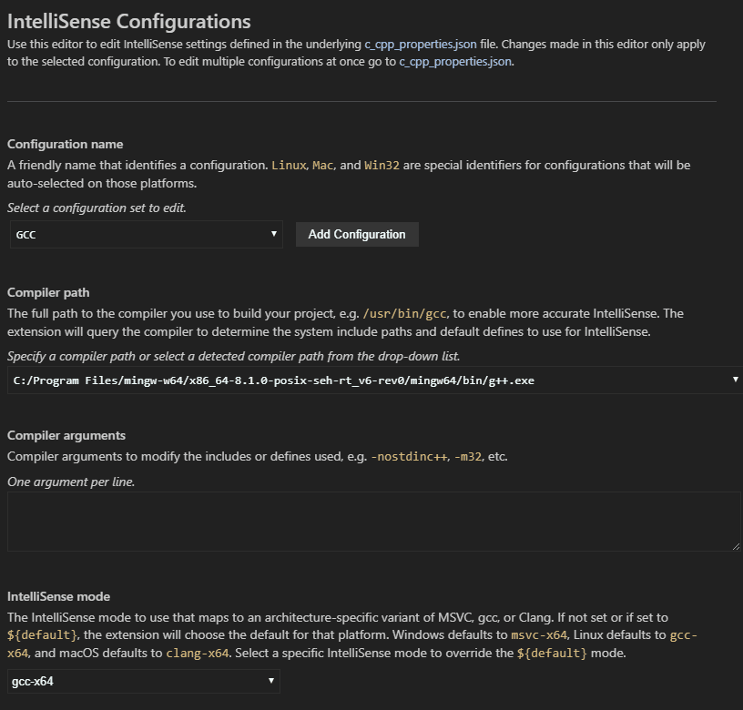

使用 GCC 与 MinGW
在本教程中，你将配置 Visual Studio Code 以使用 GCC C++ 编译器（g++）和来自 mingw-w64 的 GDB 调试器来创建在 Windows 上运行的程序。配置完 VS Code 后，你将编译、运行和调试一个 Hello World 程序。
本教程不教授 GCC、GDB、MinGW-w64 或 C++ 语言。关于这些内容，网上有许多优秀的学习资源。
如果你遇到任何问题，欢迎在 VS Code 文档仓库中为本教程提交问题。
前提条件
要成功完成本教程，你必须完成以下步骤：
- 安装 Visual Studio Code。
- 安装 VS Code 的 C/C++ 扩展。你可以在扩展视图（
kb(workbench.view.extensions)）中搜索 "C++" 来安装 C/C++ 扩展。

安装 MinGW-w64 工具链
通过 MSYS2 获取最新版本的 MinGW-w64，它提供了 GCC、MinGW-w64 和其他有用的 C++ 工具和库的最新原生构建。这将为你提供编译代码、调试代码以及配置其与 IntelliSense 协同工作所需的工具。
要安装 MinGW-w64 工具链，请观看此视频或按照以下步骤操作：
- 你可以从 MSYS2 页面下载最新的安装程序，或使用此安装程序的直接链接。
- 运行安装程序并按照安装向导的步骤操作。注意，MSYS2 需要 64 位 Windows 8.1 或更新版本。
- 在向导中，选择你所需的安装文件夹。记下此目录以备后用。在大多数情况下，推荐的目录是可以接受的。到达设置"开始"菜单快捷方式步骤时也是如此。完成后，确保勾选立即运行 MSYS2 复选框，然后选择完成。这将为你打开一个 MSYS2 终端窗口。
- 在此终端中，通过运行以下命令安装 MinGW-w64 工具链：
pacman -S --needed base-devel mingw-w64-ucrt-x86_64-toolchain - 按
kbstyle(Enter)接受toolchain组中的默认包数量。

- 当提示是否继续安装时，输入
Y。 - 通过以下步骤将 ucrt64
bin文件夹的路径添加到 WindowsPATH环境变量中：- 在 Windows 搜索栏中，输入设置以打开 Windows 设置。
- 搜索编辑账户的环境变量。
- 在用户变量中，选择
Path变量，然后选择编辑。 - 选择新建并将你在安装过程中记录的 MinGW-w64 目标文件夹添加到列表中。如果你使用了上面的默认设置，则路径为：
C:\msys64\ucrt64\bin。 - 选择确定，然后在环境变量窗口中再次选择确定以更新
PATH环境变量。
你需要重新打开所有控制台窗口才能使更新的 PATH 环境变量生效。
检查你的 MinGW 安装
要检查你的 MinGW-w64 工具是否已正确安装并可用，打开一个新的命令提示符并输入：
gcc --version
g++ --version
gdb --version你应该看到输出显示你安装的 GCC、g++ 和 GDB 的版本。如果没有：
- 确保你的 PATH 变量条目与安装工具链的 MinGW-w64 二进制文件位置匹配。如果编译器在该 PATH 条目处不存在，请确保你已按照之前的说明操作。
- 如果
gcc的输出正确但gdb没有，那么你需要从 MinGW-w64 工具集中安装缺失的包。- 如果在编译时收到 "The value of miDebuggerPath is invalid." 消息，一个原因可能是你缺少
mingw-w64-gdb包。创建一个 Hello World 应用
- 如果在编译时收到 "The value of miDebuggerPath is invalid." 消息，一个原因可能是你缺少
首先，让我们设置一个项目。
- 启动 Windows 命令提示符（在 Windows 搜索栏中输入 Windows 命令提示符）。
- 运行以下命令。这些命令将创建一个名为
projects的空文件夹，你可以在其中放置所有 VS Code 项目。然后，接下来的命令将创建并导航到一个名为helloworld的子文件夹。从那里，你将直接在 VS Code 中打开helloworld。mkdir projects cd projects mkdir helloworld cd helloworld code .
"code ." 命令在当前工作文件夹中打开 VS Code，该文件夹将成为你的"工作区"。通过选择是的，我相信作者来接受工作区信任对话框，因为这是你创建的文件夹。
随着教程的进行，你将在工作区的 .vscode 文件夹中看到三个文件被创建：
tasks.json（构建说明）launch.json（调试器设置）c_cpp_properties.json（编译器路径和 IntelliSense 设置）添加 Hello World 源代码文件
在文件资源管理器标题栏中，选择新建文件按钮并将文件命名为 helloworld.cpp。

添加 hello world 源代码
现在粘贴以下源代码：
#include <iostream>
#include <vector>
#include <string>
using namespace std;
int main()
{
vector<string> msg {"Hello", "C++", "World", "from", "VS Code", "and the C++ extension!"};
for (const string& word : msg)
{
cout << word << " ";
}
cout << endl;
}现在按 kb(workbench.action.files.save) 保存文件。注意你刚添加的文件是如何出现在 VS Code 侧边栏的文件资源管理器视图（kb(workbench.view.explorer)）中的：

你还可以通过选择文件 > 自动保存来启用自动保存以自动保存你的文件更改。你可以在 VS Code 用户界面文档中了解更多关于其他视图的信息。
>注意：当你保存或打开 C++ 文件时，你可能会看到来自 C/C++ 扩展的通知，告知有关 Insider 版本的可用性，该版本让你可以测试新功能和新修复。你可以通过选择 X（清除通知）来忽略此通知。
探索 IntelliSense
IntelliSense 是一个帮助你更快、更高效编码的工具，它添加了代码编辑功能，如代码补全、参数信息、快速信息和成员列表。
要查看 IntelliSense 的实际效果，
将鼠标悬停在 vector 或 string 上以查看其类型信息。如果你在第 10 行输入 msg.，你可以看到推荐的成员函数补全列表，所有这些都由 IntelliSense 生成：

你可以按 kbstyle(Tab) 键插入选中的成员。如果你然后添加左括号，IntelliSense 将显示需要哪些参数的信息。
如果 IntelliSense 尚未配置，打开命令面板（kb(workbench.action.showCommands)）并输入选择 IntelliSense 配置。从编译器下拉列表中选择 Use gcc.exe 进行配置。更多信息可以在 IntelliSense 配置文档中找到。
运行 helloworld.cpp
请记住，C++ 扩展使用你计算机上安装的 C++ 编译器来构建你的程序。在尝试在 VS Code 中运行和调试 helloworld.cpp 之前，请确保你已完成"安装 MinGW-w64 工具链"步骤。
- 打开
helloworld.cpp，使其成为活动文件。 - 按编辑器右上角的播放按钮。

- 从系统上检测到的编译器列表中选择 C/C++: g++.exe 构建和调试活动文件。

你只会在第一次运行 helloworld.cpp 时被要求选择编译器。该编译器将被设置为 tasks.json 文件中的"默认"编译器。
- 构建成功后，你的程序输出将显示在集成终端中。

恭喜！你刚刚在 VS Code 中运行了你的第一个 C++ 程序！
理解 tasks.json
第一次运行程序时，C++ 扩展会创建一个 tasks.json 文件，你可以在项目的 .vscode 文件夹中找到它。tasks.json 存储你的构建配置。
你的新 tasks.json 文件应该类似于下面的 JSON：
{
"tasks": [
{
"type": "cppbuild",
"label": "C/C++: g++.exe build active file",
"command": "C:\\msys64\\ucrt64\\bin\\g++.exe",
"args": [
"-fdiagnostics-color=always",
"-g",
"${file}",
"-o",
"${fileDirname}\\${fileBasenameNoExtension}.exe"
],
"options": {
"cwd": "${fileDirname}"
},
"problemMatcher": [
"$gcc"
],
"group": {
"kind": "build",
"isDefault": true
},
"detail": "Task generated by Debugger."
}
],
"version": "2.0.0"
}>注意：你可以在变量参考中了解更多关于 tasks.json 变量的信息。
command 设置指定要运行的程序；这里指的是 g++。
args 数组指定传递给 g++ 的命令行参数。这些参数按编译器期望的特定顺序在此文件中列出。
此任务告诉 g++ 获取活动文件（${file}），编译它，并在当前目录（${fileDirname}）中创建一个输出文件（-o 开关），文件名与活动文件相同，但带有 .exe 扩展名（${fileBasenameNoExtension}.exe）。对我们来说，这会生成 helloworld.exe。
label 值是你在任务列表中看到的内容；你可以随意命名。
detail 值是你在任务列表中看到的任务描述。强烈建议重命名此值以区别于类似的任务。
problemMatcher 值选择用于在编译器输出中查找错误和警告的输出解析器。对于 GCC，使用 $gcc 问题匹配器会获得最佳结果。
从现在开始，播放按钮将从 tasks.json 中读取以确定如何构建和运行你的程序。你可以在 tasks.json 中定义多个构建任务，并且被标记为默认的任务将被播放按钮使用。如果你需要更改默认编译器，可以在命令面板中运行任务：配置默认构建任务。或者，你可以修改 tasks.json 文件并通过将以下段落：
"group": {
"kind": "build",
"isDefault": true
},替换为：
"group": "build",来移除默认值。
修改 tasks.json
自 2024 年 11 月 3 日起，MSYS2 默认禁用了 mingw-w64 的通配符支持。此更改会影响构建命令中通配符（如 "*.cpp"）的处理方式。要在 tasks.json 中构建多个 C++ 文件，你必须明确列出文件，使用构建系统（如 make 或 cmake），或实施以下解决方法：https://www.msys2.org/docs/c/#expanding-wildcard-arguments。
如果你之前使用 "${workspaceFolder}/*.cpp" 来编译当前文件夹中的所有 .cpp 文件，这将不再直接有效。相反，你可以手动列出文件或定义一个构建脚本。
调试 helloworld.cpp
要调试你的代码，
- 回到
helloworld.cpp，使其成为活动文件。 - 通过点击编辑器边距或在当前行使用 F9 来设置断点。

- 从播放按钮旁边的下拉菜单中，选择调试 C/C++ 文件。

- 从系统上检测到的编译器列表中选择 C/C++: g++ 构建和调试活动文件（你只会在第一次运行或调试
helloworld.cpp时被要求选择编译器）。
播放按钮有两种模式：运行 C/C++ 文件和调试 C/C++ 文件。它将默认为上次使用的模式。如果你在播放按钮中看到调试图标，你可以直接选择播放按钮进行调试，而无需使用下拉菜单。
探索调试器
在你开始单步执行代码之前，让我们花点时间注意用户界面中的几个变化：
- 集成终端出现在源代码编辑器的底部。在调试控制台选项卡中，你会看到表明调试器已启动并正在运行的输出。
- 编辑器高亮显示你在启动调试器之前设置了断点的行：

- 左侧的运行和调试视图显示调试信息。你将在本教程后面部分看到一个示例。
- 在代码编辑器的顶部，会出现一个调试控制面板。你可以通过抓住左侧的圆点来在屏幕上移动它。

单步执行代码
现在你已准备好开始单步执行代码了。
- 选择调试控制面板中的单步跳过图标。

这将使程序执行前进到 for 循环的第一行，并跳过在创建和初始化 msg 变量时调用的 vector 和 string 类中的所有内部函数调用。注意左侧变量窗口中的变化。

在这种情况下，出现错误是正常的，因为虽然循环的变量名现在对调试器可见，但语句尚未执行，所以此时没有任何内容可读取。然而，msg 的内容是可见的，因为该语句已经完成。
- 再次按单步跳过以前进到此程序中的下一条语句（跳过为初始化循环而执行的所有内部代码）。现在，变量窗口显示有关循环变量的信息。
- 再次按单步跳过以执行
cout语句。（请注意，C++ 扩展在循环退出之前不会向调试控制台打印任何输出。） - 如果你愿意，可以继续按单步跳过直到向量中的所有单词都被打印到控制台。但如果你好奇，可以尝试按单步进入按钮来单步执行 C++ 标准库中的源代码！
要返回到你自己的代码，一种方法是继续按单步跳过。另一种方法是在你的代码中设置一个断点：切换到代码编辑器中的 helloworld.cpp 选项卡，将插入点放在循环内 cout 语句的某个位置，然后按 kb(editor.debug.action.toggleBreakpoint)。左侧的装订线中会出现一个红点，表示在此行设置了一个断点。

然后按 kb(workbench.action.debug.start) 从标准库头文件中的当前行开始执行。执行将在 cout 处中断。如果你愿意，可以再次按 kb(editor.debug.action.toggleBreakpoint) 来关闭断点。
当循环完成时，你可以在集成终端中看到输出，以及 GDB 输出的一些其他诊断信息。

设置监视
有时你可能希望在程序执行时跟踪变量的值。你可以通过对变量设置监视来实现这一点。
- 将插入点放在循环内部。在监视窗口中，选择加号并在文本框中输入
word，这是循环变量的名称。现在在你单步执行循环时查看监视窗口。

- 通过在循环前添加此语句来添加另一个监视：
int i = 0;。然后，在循环内部添加此语句：++i;。现在像上一步一样为i添加监视。 - 要在断点处暂停执行时快速查看任何变量的值，你可以将鼠标指针悬停在其上。

使用 launch.json 自定义调试
当你使用播放按钮或 kb(workbench.action.debug.start) 进行调试时，C++ 扩展会动态创建一个调试配置。
有些情况下你可能希望自定义调试配置，例如指定在运行时传递给程序的参数。你可以在 launch.json 文件中定义自定义调试配置。
要创建 launch.json，请从播放按钮下拉菜单中选择添加调试配置。

然后你会看到一个包含各种预定义调试配置的下拉菜单。选择 C/C++: g++.exe 构建和调试活动文件。
VS Code 会在 .vscode 文件夹中创建一个 launch.json 文件，其内容类似于以下：
{
"configurations": [
{
"name": "C/C++: g++.exe build and debug active file",
"type": "cppdbg",
"request": "launch",
"program": "${fileDirname}\\${fileBasenameNoExtension}.exe",
"args": [],
"stopAtEntry": false,
"cwd": "${fileDirname}",
"environment": [],
"externalConsole": false,
"MIMode": "gdb",
"miDebuggerPath": "C:\\msys64\\ucrt64\\bin\\gdb.exe",
"setupCommands": [
{
"description": "Enable pretty-printing for gdb",
"text": "-enable-pretty-printing",
"ignoreFailures": true
},
{
"description": "Set Disassembly Flavor to Intel",
"text": "-gdb-set disassembly-flavor intel",
"ignoreFailures": true
}
],
"preLaunchTask": "C/C++: g++.exe build active file"
}
],
"version": "2.0.0"
}在上面的 JSON 中，program 指定你要调试的程序。这里它被设置为活动文件文件夹（${fileDirname}）和带有 .exe 扩展名的活动文件名（${fileBasenameNoExtension}.exe），如果 helloworld.cpp 是活动文件，则为 helloworld.exe。args 属性是一个在运行时传递给程序的参数数组。
默认情况下，C++ 扩展不会在你的源代码中添加任何断点，stopAtEntry 值设置为 false。
将 stopAtEntry 值更改为 true 会使调试器在启动调试时在 main 方法处停止。
从现在开始，播放按钮和kb(workbench.action.debug.start)在启动程序进行调试时将从你的launch.json文件中读取。
添加额外的 C/C++ 设置
如果你希望对 C/C++ 扩展有更多控制，可以创建一个 c_cpp_properties.json 文件，它允许你更改设置，如编译器路径、包含路径、C++ 标准（默认为 C++17）等。
你可以通过从命令面板（kb(workbench.action.showCommands)）运行 C/C++: 编辑配置 (UI) 命令来查看 C/C++ 配置 UI。

这将打开 C/C++ 配置页面。当你在此处进行更改时，VS Code 会将它们写入 .vscode 文件夹中名为 c_cpp_properties.json 的文件。
在这里，我们已将配置名称更改为 GCC，将编译器路径下拉菜单设置为 g++ 编译器，并将 IntelliSense 模式设置为匹配编译器（gcc-x64）。

Visual Studio Code 将这些设置保存在 .vscode\c_cpp_properties.json 中。如果你直接打开该文件，它应该类似于以下内容：
{
"configurations": [
{
"name": "GCC",
"includePath": [
"${workspaceFolder}/**"
],
"defines": [
"_DEBUG",
"UNICODE",
"_UNICODE"
],
"windowsSdkVersion": "10.0.22000.0",
"compilerPath": "C:/msys64/mingw64/bin/g++.exe",
"cStandard": "c17",
"cppStandard": "c++17",
"intelliSenseMode": "windows-gcc-x64"
}
],
"version": 4
}你只需要在你的程序包含不在工作区或标准库路径中的头文件时才添加到包含路径数组设置。强烈建议不要将系统包含路径添加到你支持的编译器的 includePath 设置中。
编译器路径
扩展使用 compilerPath 设置来推断 C++ 标准库头文件的路径。当扩展知道在哪里找到这些文件时，它可以提供诸如智能补全和转到定义导航等功能。
C/C++ 扩展尝试根据在系统上找到的默认编译器来填充 compilerPath。扩展会在几个常见的编译器位置查找，但只会自动选择位于 "Program Files" 文件夹之一或其路径列在 PATH 环境变量中的编译器。如果可以找到 Microsoft Visual C++ 编译器，它将被选中，否则它将选择 gcc、g++ 或 clang 的一个版本。
如果你安装了多个编译器，你可能需要更改 compilerPath 以匹配项目首选编译器。你也可以使用命令面板中的 C/C++: 选择 IntelliSense 配置... 命令来选择扩展检测到的编译器之一。
故障排除
MSYS2 已安装，但仍然找不到 g++ 和 gdb
你必须按照 MSYS2 网站上的步骤使用 MSYS CLI 安装完整的 MinGW-w64 工具链（pacman -S --needed base-devel mingw-w64-ucrt-x86_64-toolchain），以及所有必需的先决条件。该工具链包含 g++ 和 gdb。
作为 Windows 用户，运行 pacman 命令出现错误
Windows 计算机上的 UCRT 仅包含在 Windows 10 或更高版本中。如果你使用其他版本的 Windows，请运行以下不使用 UCRT 的命令：
pacman -S --needed base-devel mingw-w64-x86_64-toolchain在将 MinGW-w64 目标文件夹添加到环境变量列表时，默认路径将为：C:\msys64\mingw64\bin。
MinGW 32 位
如果你需要 32 位版本的 MinGW 工具集，请参阅 MSYS2 wiki 上的下载部分。它包含 32 位和 64 位安装选项的链接。
后续步骤
- 探索 VS Code 用户指南。
- 查看 C++ 扩展概述。
- 创建一个新的工作区，将你的
.vscodeJSON 文件复制到其中，根据需要调整新工作区路径、程序名称等设置，然后开始编码！